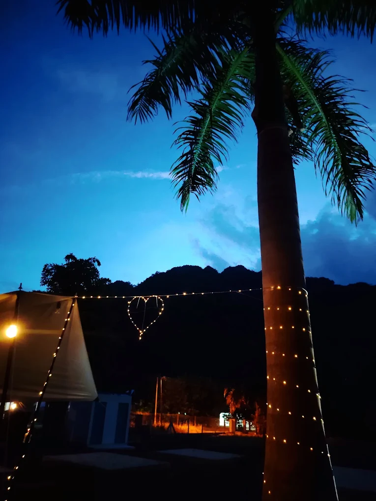
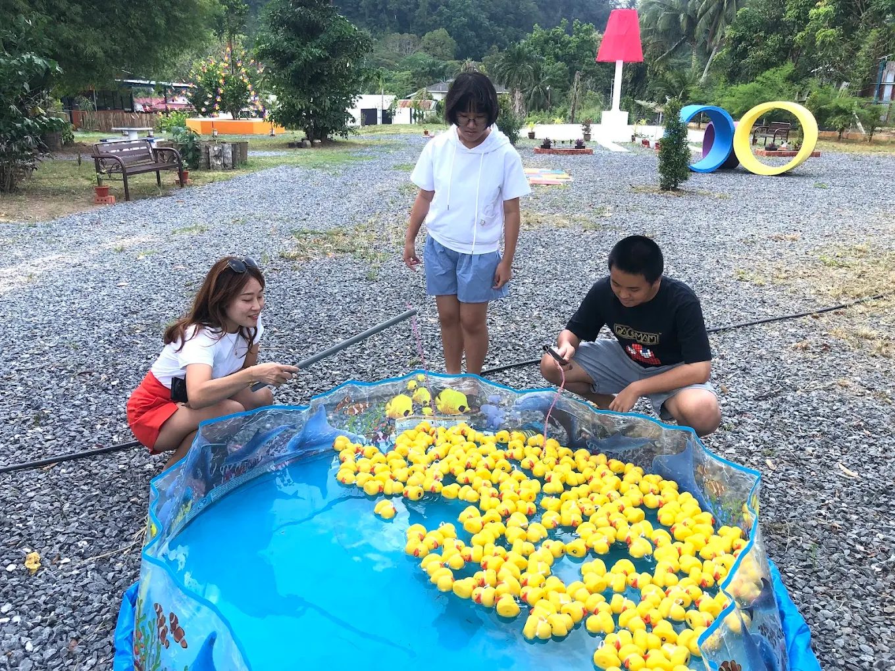
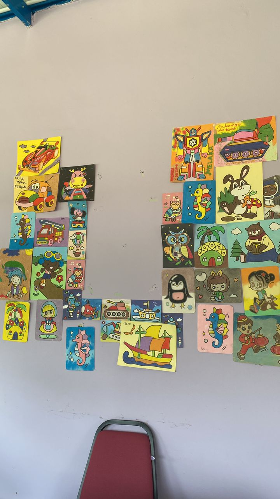
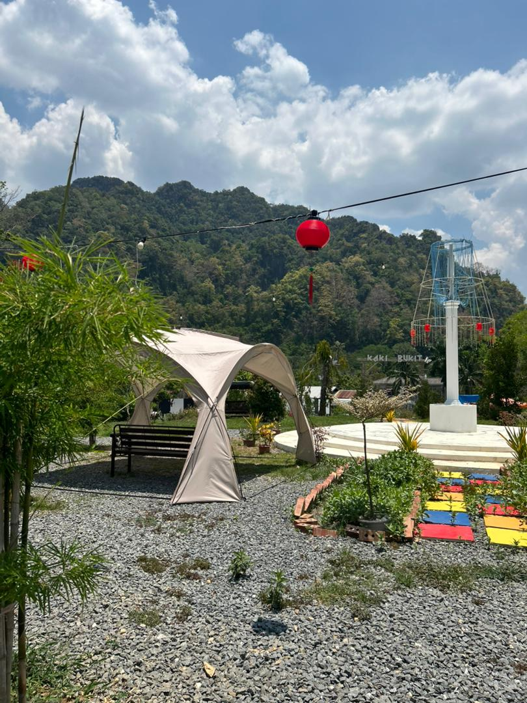

YL Recreation Park offers a variety of engaging and enjoyable activities for visitors of all ages. Among the popular activities are feeding fish, clay colouring, swimming, and relaxing in a natural environment. These activities provide both entertainment and educational value, especially for students and families.
Feeding fish gives visitors a chance to interact directly with nature, creating a fun and memorable experience. Clay colouring allows visitors to express their creativity and develop artistic skills in a relaxing setting. Meanwhile, swimming offers a refreshing escape from the heat, making the visit more enjoyable.
In addition, the peaceful surroundings of the park provide a perfect place for relaxation and stress relief. Visitors can take a break from their busy daily routines and enjoy the calm atmosphere. Overall, the activities at YL Recreation Park create a meaningful and enjoyable experience while promoting appreciation for nature.

Night View

Playing At Pool

Art Activity

Park View
YL Recreation Park is a perfect destination for those who want to relax and enjoy nature. The peaceful environment, fresh air, and beautiful scenery make it an ideal place to escape from busy daily life.
Visitors can spend quality time with family and friends while enjoying fun activities and natural surroundings. It is also suitable for students who want to experience outdoor learning and creativity.
Overall, YL Recreation Park offers a memorable experience that combines relaxation, fun, and appreciation of nature.